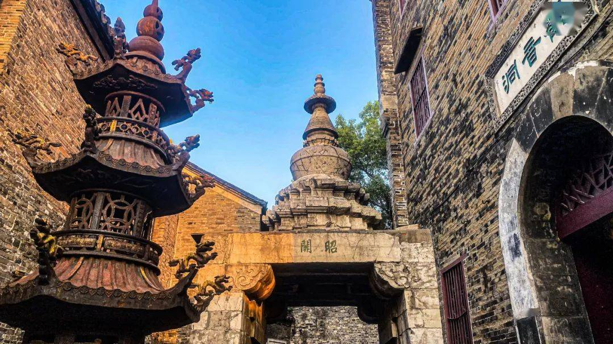
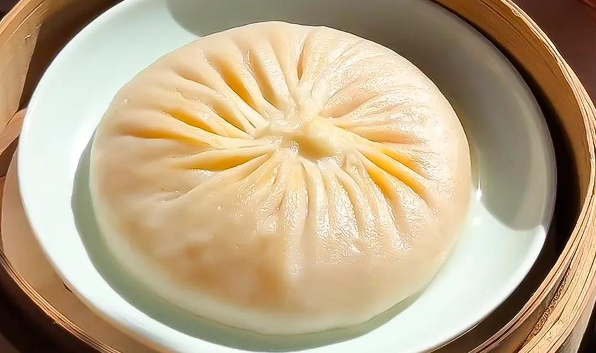

13:00
约 1.5h

抵达镇江 · 入住滨江皇冠假日 3 晚连住
- 地址长江路 27 号 · 京口区（步行可达西津渡）
- 交通镇江站打车约 10 分钟 · 镇江南站约 25 分钟
- 电话0511-88959888 · 高德 4.7 分
14:30
约 2h
西津渡历史文化街区 街区免费平地石板路
- 地址润州区西津渡街 25 号 · 马可·波罗登岸处
- 营业街区全天 · 收费小景点 9:00–17:00
- 打卡昭关石塔 → 一眼看千年（唐代渡口遗迹）→ 观音洞 → 救生会 → 五十三坡
16:30
约 1h
伯先公园 免费城市公园
- 位置西津渡南侧临伯先路
- 看点纪念民主革命先驱赵伯先的城市绿地，缓坡草坪平路好走
17:30
约 1.5h

晚餐 · 宴春酒楼（西津渡口店） 中华老字号
- 地址长江路 46 号 A 座 · 西津渡停车场入口处
- 人均80–120 元 · 建议 17:00 开餐即到避等位
- 必点水晶肴肉（配香醋姜丝）· 蟹黄汤包 · 锅盖面
19:00
约 1.5h
西津渡夜景 · 长江路滨江步道回酒店
- 看点入夜昭关石塔亮灯、古街灯笼次第亮起，镇江最出片画面
- 动线沿长江路平路散步回酒店约 1.5km · 20:30 前回房
今日步行约 4,500–6,000 步 · 节奏：★★☆☆☆